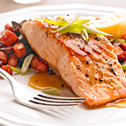

Salmon is one of my favourite dishes! It's so nutrious and tasty. There are many ways to cook salmon, and today I will be showing you a few different ways of cooking up this delectable fish.
It is vital that you choose your ingredients before you start deciding what kind of salmon you want to make. For this recipe, we will be making Pan-Grilled Salmon
Note: for more information on salmon, you can visit This Page and see if salmon is right for you.